Cómo armar tu CV
Un documento de una hoja con tus datos, tus habilidades y tu experiencia.
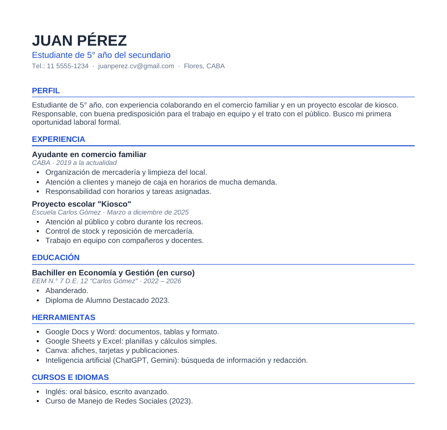
El mismo contenido, mal y bien presentado
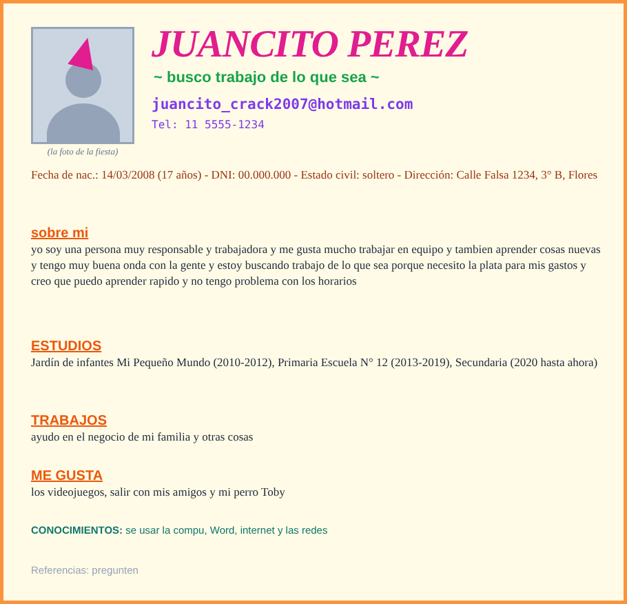
1234565- 1Foto informal.
- 2Mail con apodo.
- 3Datos que no van: DNI, edad, estado civil, dirección exacta.
- 4Texto corrido, sin secciones y con errores de ortografía.
- 5Datos que no suman: jardín de infantes, videojuegos, la mascota.
- 6Experiencia sin tareas concretas.
Tocá cualquiera de los dos CV para verlo en grande.
Las 4 partes de un CV
Datos y perfil
Nombre, puesto, contacto y 2 o 3 líneas sobre vos.
Experiencia
Trabajos o actividades concretas, en viñetas. Sirve un negocio familiar o un proyecto del colegio.
Educación
Colegio y título, en curso o terminado. Sumá tus logros.
Habilidades
Herramientas que realmente manejás: caja, Excel, Canva.
Tocá una parte para resaltarla en el CV.
Qué va y qué no
- 1Nombre y el puesto que buscás.
- 2Teléfono, mail con tu nombre (sin apodos) y barrio o zona.
- 3Perfil breve.
- DNI
- Edad y estado civil
- Dirección exacta
- Foto, salvo que el aviso la pida (ver Anexo A)
Cómo escribirlo
- 1Negrita solo en puestos, herramientas y logros.
- 2Lugar y fechas en letra más chica.
- 3Viñetas cortas: una tarea concreta por línea, con palabras clave del aviso.
- 4Lo más reciente primero. Una sola hoja y ortografía revisada.
El ATS: un programa que lee tu CV primero
Muchas empresas lo usan para buscar las palabras clave del aviso antes de que lo lea una persona.
Ilustración: en sistemas más antiguos, el texto de las dos columnas se puede mezclar.
Se lee de arriba hacia abajo, en el orden correcto.
Una columna o dos
Lectura simple de arriba hacia abajo.
La más segura para sitios de empleo
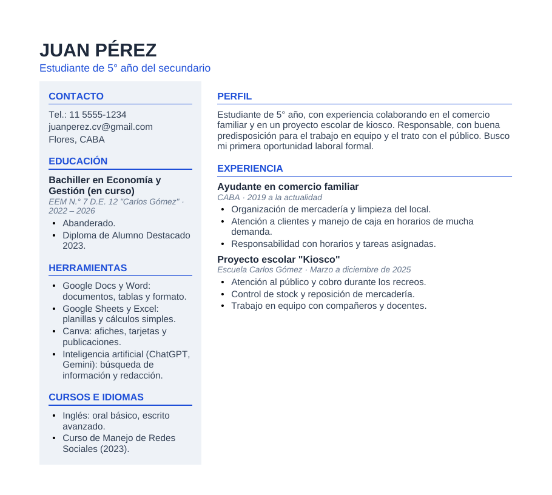
Aprovecha la hoja: datos a la izquierda, perfil y experiencia a la derecha.
Ideal para enviar por mail o imprimir
Tocá un CV para verlo en grande. En las próximas pantallas armamos el de dos columnas.
Cómo armar el CV a dos columnas
Se hace con una tabla de 1 fila y 2 columnas, y al final se le sacan los bordes. Elegí dónde lo armás:
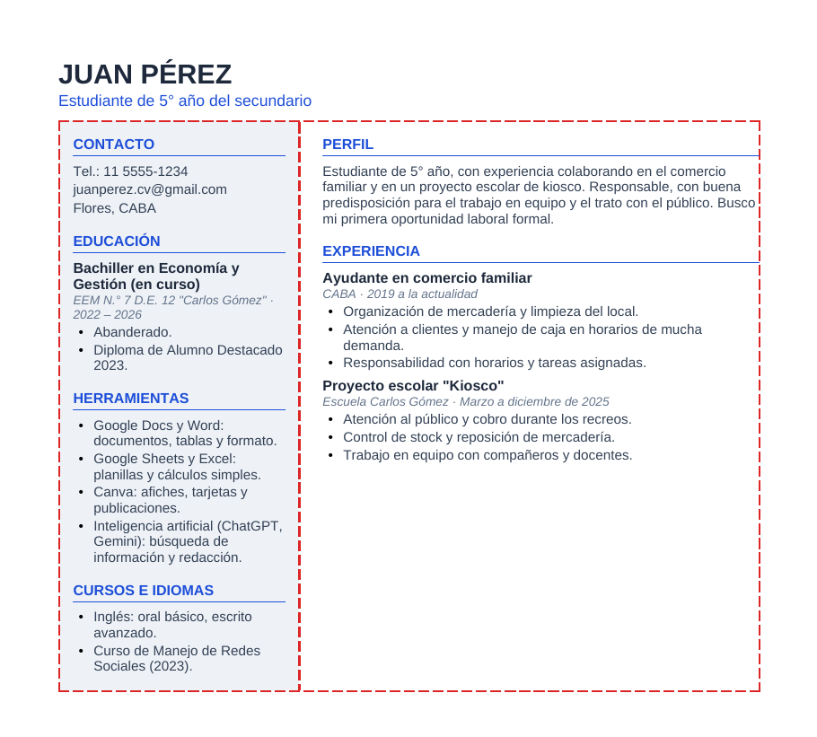
Menús verificados en la ayuda oficial: Google Docs · Word, insertar tabla · Word, quitar bordes
Nombre y puesto
Escribí arriba tu nombre y el puesto.
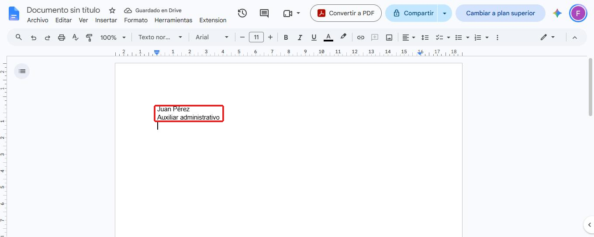
Tocá la captura para verla en grande.
Nombre y puesto
Escribí arriba tu nombre y el puesto.
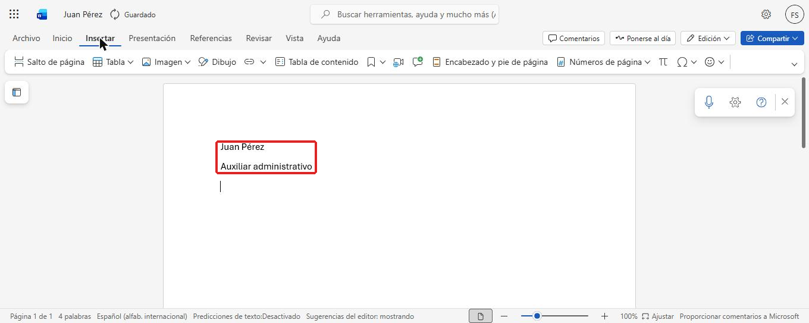
Tocá la captura para verla en grande.
Insertá la tabla
Menú Insertar > Tabla. Marcá 1 fila y 2 columnas.

Tocá la captura para verla en grande.
Insertá la tabla
Pestaña Insertar > Tabla. Marcá 2 columnas y 1 fila en la cuadrícula.

Tocá la captura para verla en grande.
Ajustá el ancho
Arrastrá la línea del medio hacia la izquierda para que esa columna quede más angosta.

Tocá la captura para verla en grande.
Ajustá el ancho
Hacé clic en una celda. En la pestaña Tabla, escribí el ancho de la columna: por ejemplo 1.9" la izquierda y 4.6" la derecha.
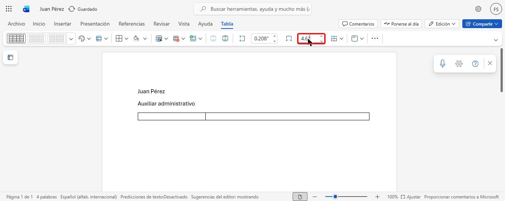
Tocá la captura para verla en grande.
Escribí el contenido
Izquierda: contacto, educación, herramientas, cursos e idiomas.
Derecha: perfil y experiencia.

Tocá la captura para verla en grande.
Escribí el contenido
Izquierda: contacto, educación, herramientas, cursos e idiomas.
Derecha: perfil y experiencia.
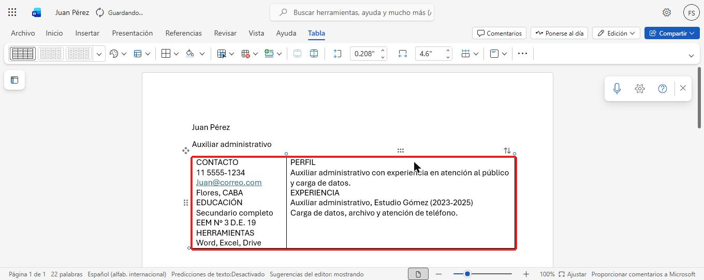
Tocá la captura para verla en grande.
Pintá la columna izquierda
Hacé clic en la celda de la izquierda. En la barra de herramientas tocá los tres puntos ⋮ y elegí el balde de pintura (color de fondo de la celda).

Tocá la captura para verla en grande.
Pintá la columna izquierda
Hacé clic en la celda de la izquierda. En la pestaña Tabla, abrí la flecha de Sombreado de celda y elegí un color claro.

Tocá la captura para verla en grande.
Sacá los bordes
Menú Formato > Tabla > Opciones de tabla. En Color > Borde de la tabla, abrí el grosor y elegí 0 pto.
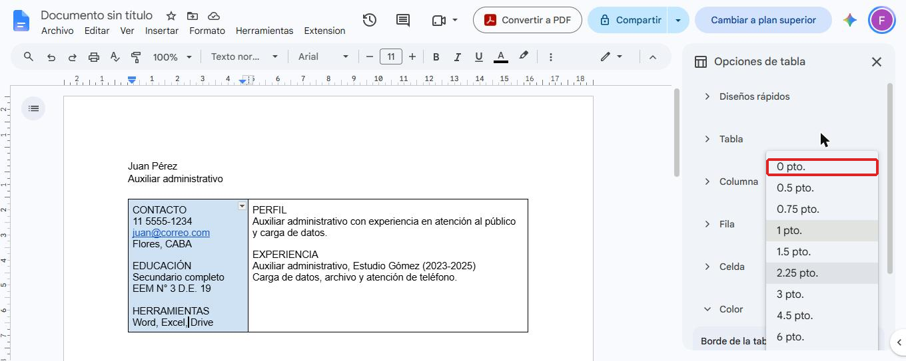
Tocá la captura para verla en grande.
Sacá los bordes
Seleccioná toda la tabla: clic en la primera celda y Mayús + clic en la última. En la pestaña Tabla, abrí la flecha de Bordes y elegí Sin borde (el último ícono).
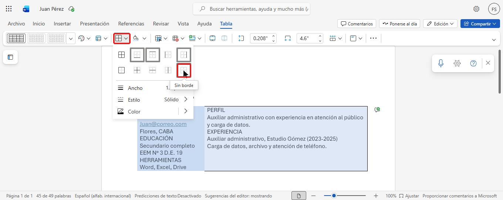
Tocá la captura para verla en grande.
Listo
El CV queda sin bordes y en una sola hoja. Para enviarlo: Archivo > Descargar > PDF.
Listo
El CV queda sin bordes. Revisá que entre en una sola hoja.
Cuatro modelos para copiar
Tocá cada CV para verlo en grande.


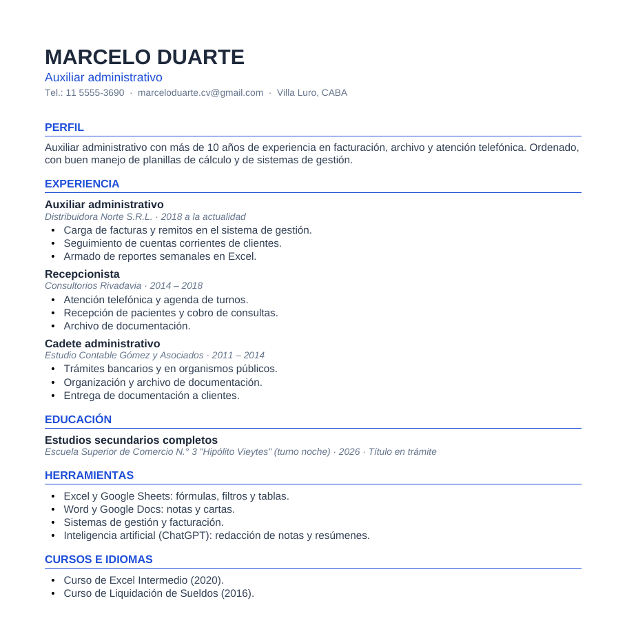

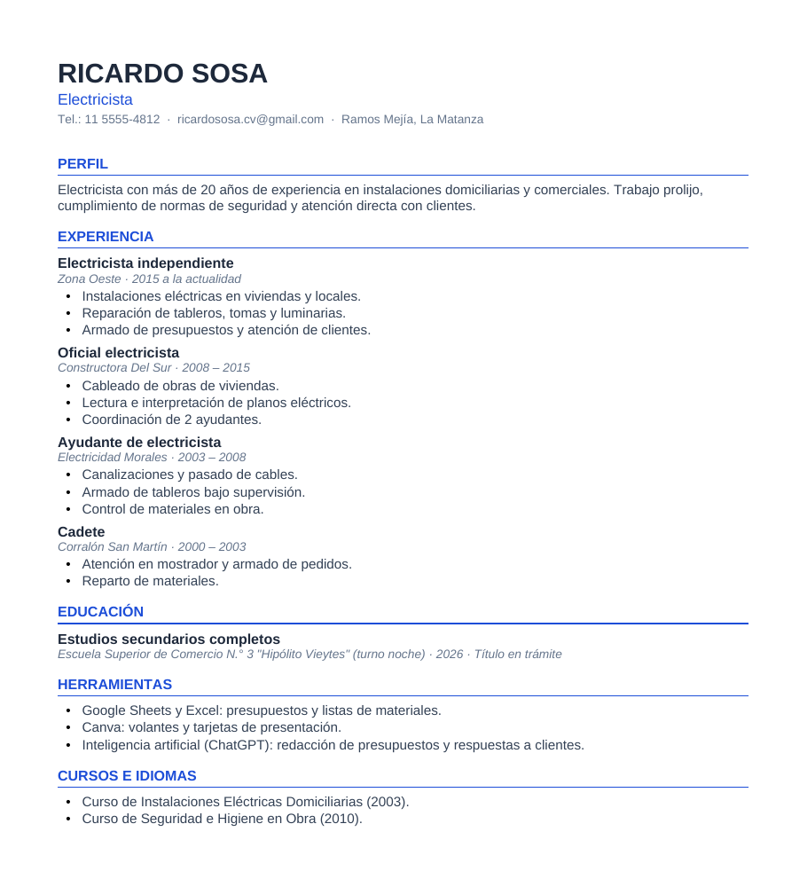

Antes de enviarlo
Anexos
Material extra, para cuando lo necesites. Cada uno se abre aparte.
La foto del CV
- Fondo simple.
- Buena luz, de frente.
- De los hombros para arriba.
- Ropa prolija y actitud natural.
- Filtros exagerados y edición excesiva.
- Fotos oscuras o fondos desordenados.
- Selfies informales o recortes de fotos grupales.
Con IA se puede quitar el fondo y ajustar luz y colores. Sirve para pulir la foto, no para crear una versión falsa de vos. En Docs: Insertar > Imagen > Subir del ordenador.

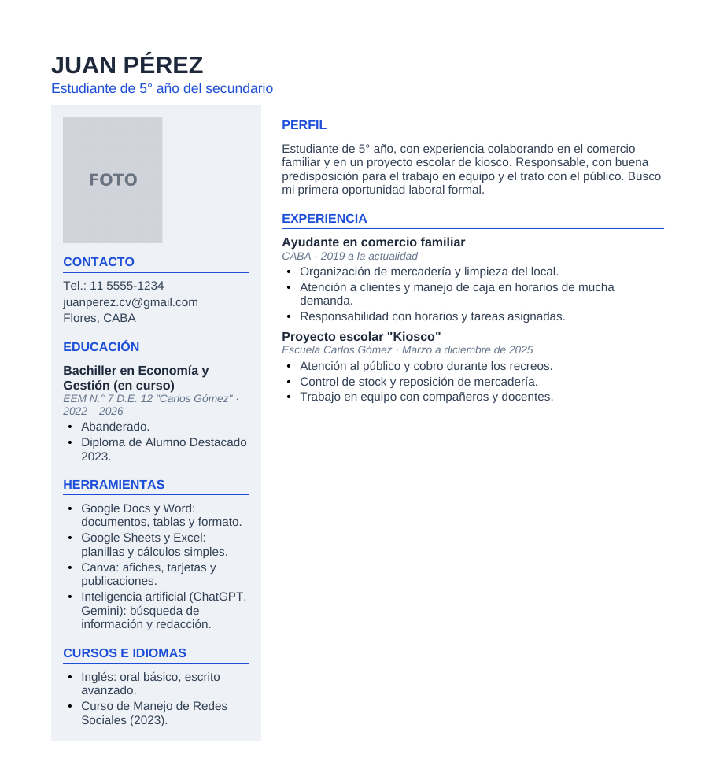
Tu perfil online
Lo que ve quien busca tu nombre.
Correo profesional
Formato nombre.apellido, sin apodos.
Nombre real
En las redes públicas vinculadas a tu búsqueda laboral.
Foto coherente
Prolija, en las plataformas de trabajo.
LinkedIn básico
Recomendable si es relevante para tu rubro. Ver la clase.
La carta de presentación
Acompaña al CV cuando lo enviás.
- Lugar y fecha, a la derecha.
- Destinatario.
- Tres párrafos cortos: el puesto, tu experiencia y el CV adjunto.
- Saludo, nombre, teléfono y mail.
Mejorar el CV con IA
Gemini, ChatGPT o Claude pueden revisarlo y armar dos versiones.
- Subí tu CV a la IA.
- Respondé sus preguntas con datos reales.
- Pedile una versión de una columna y otra de dos.
- Revisá el resultado antes de entregarlo.
Revisá que